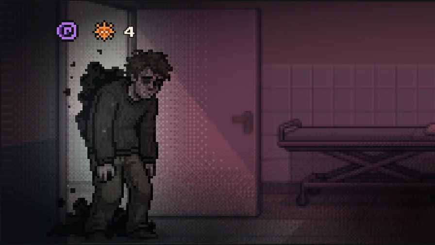

DEPRESSIONDEPRESIÓNLa Sombra PesadaTHE HEAVY SHADOW
Soaks 2 cards per turn. Wet cards you don't play get locked. Absolute Apathy fills your discard with Dark Thoughts, and Whisper of Surrender hurts the Protegido for each one still in your hand. It punishes passivity.Moja 2 cartas por turno. Las mojadas que no jugás se bloquean. Apatía Absoluta llena tu descarte de Pensamientos Oscuros y Susurro de Rendición lastima al Protegido por cada uno que te quede en la mano. Castiga la pasividad.